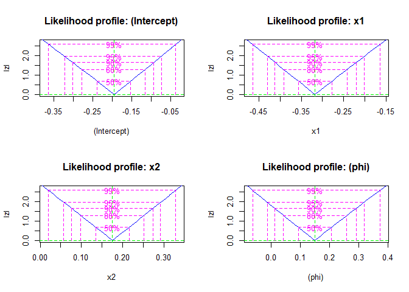

O pacote betaregesc oferece uma biblioteca de funções em R para ajuste de modelos de regressão beta para dados oriundos de escalas mapeáveis no suporte da distribuição beta, como por exemplo Escaldas de dor, Likert entre outras, do modo que a incertea do instrumento é avaliada de forma intervalar. O framework aqui suporta modelos com dispersão fixa ou variável, tudo no paradigma de máxima verossimilhança. São oferecidas ainda, funções para simulações e avaliação do desempenho dos modelos no processo de estimação e outras para akjuste do modelo a dados reais. O código-fonte e contribuições podem ser acessados no repositório oficial do GitHub. Informações detalhadas sobre instalação e uso estão disponíveis na documentação do pacote.
O betaregesc é voltado para modelagem de dados com variável resposta mapeável em intervalo contínuo, e.g., y = (ys;yi), abrangendo censura à esquerda, direita ou intervalar independente do tempo. Aplica-se em pesquisas de opinião, avaliações de produtos, escalas de dor no estilo NRS-11, NRS-21 e NRS-101, avaliações de compostos químicos, entre outros. Utilizando a distribuição beta, acomoda características dos dados em estrutura de regressão, associando variáveis explicativas à variável resposta intervalar e permitindo preditores lineares para coeficientes relacionados à média e dispersão, fornecendo estimativas robustas e confiáveis dos parâmetros do modelo.
Principais funcionalidades
Entre as principais funcionalidades ten-se:
- Ajuste de modelos de regressão beta com dispersão fixa e variável.
- Funções para simulação de dados, permitindo a avaliação do desempenho dos modelos em diferentes cenários.
- Estatística de bondade do ajuste como AIC e BIC, por exemplo em
gof(). - Funções genéricas como
coef,vcov,fitted,residuals,summaryeprintforam implementadas para a classebetaregescpara facilitar o acesso às medidas do ajuste. - Funções para ajuste e comparação de modelos com diferentes combinações de variáveis explicativas tanto para μ como ϕ.
Acesse a documentação detalhada de cada função e exemplos de uso neste site para obter informações sobre como utilizar o pacote
betaregescem suas análises.
Instalação
Você pode instalar o pacote com esse comando abaixo.
if(!require(betaregesc)){
devtools::install_github("evandeilton/betaregesc")
}
require(betaregesc, quietly = TRUE)Exemplos
Esses são alguns exemplos de uso das funções do pacote.
Simula dados do modelo beta intervalar com dispersão fixa
Esta função gera amostras de variável beta com dispersão fixa usando várias funções de ligação.
No exemplo a seguir em código R, demonstramos como usar a função betaregesc_simula_dados para simular dados de variável beta com dispersão fixa:
- Criamos um conjunto de dados com 100 observações e duas variáveis explicativas independentes (x1 e x2) a partir de uma distribuição normal.
- Utilizamos a função beta_ordinal_simula_dados para simular dados com parâmetros personalizados fornecidos.
OBS.:
typeé o tipo de tratamento do intervalomcentralizayao meio. Ex. Se foi coletado o valor y = 6, transforma-se yt = 6/10 = 0.6. Assim, para tratar a incerteza do instrumento, sugere-se que a medida anotada pode estar limitada a yleft = 5.5 e yright = 6.6.
# Criar um conjunto de dados de exemplo
set.seed(4255)
n <- 200
dados <- data.frame(x1 = rnorm(n),
x2 = rnorm(n))
dados_simulados <- betaregesc_simula_dados(
formula = ~ x1 + x2,
dados = dados,
betas = c(0.3, -0.6, 0.4),
phi = 1/10,
link = "logit",
link_phi = "logit",
ncuts = 100,
type = "m",
repar = "2"
)
dados_simulados %>%
head() %>%
knitr::kable(digits = 4, caption = "")| left | right | yt | y | x1 | x2 |
|---|---|---|---|---|---|
| 0.005 | 0.015 | 0.01 | 1 | 1.9510 | -0.5588 |
| 0.665 | 0.675 | 0.67 | 67 | 0.7725 | -0.0711 |
| 0.285 | 0.295 | 0.29 | 29 | 0.7264 | 0.4692 |
| 0.895 | 0.905 | 0.90 | 90 | 0.0487 | 0.1113 |
| 0.315 | 0.325 | 0.32 | 32 | -0.5445 | -0.5612 |
| 0.995 | 1.000 | 1.00 | 100 | 0.3600 | 0.0187 |
Ajuste de modelos com dispersão fixa
- Exemplo do ajuste com optim direto para uma lista de links
links <- c("logit","probit","cauchit","cloglog")
names(links) <- links
fit_fixo <- purrr::map(links, .f = function(link){
betaregesc(
formula = y ~ x1 + x2,
dados = dados_simulados,
link = link,
link_phi = "logit",
repar = "2",
num_hessiana = TRUE)
})Resumo das estimativas e bondade
Estimativas do ajuste e Bondade
purrr::map_df(resumo, function(res){
res$est
}, .id = "link") %>%
knitr::kable(digits = 4, caption = "") | link | variable | estimate | ci_lower | ci_upper | se | t_value | p_value |
|---|---|---|---|---|---|---|---|
| logit | (Intercept) | 0.2859 | 0.1050 | 0.4669 | 0.0923 | 3.0979 | 0.0022 |
| logit | x1 | -0.5358 | -0.7265 | -0.3452 | 0.0972 | -5.5101 | 0.0000 |
| logit | x2 | 0.3098 | 0.1195 | 0.5002 | 0.0971 | 3.1899 | 0.0017 |
| logit | (phi)_(Intercept) | 0.1224 | -0.0467 | 0.2915 | 0.0863 | 1.4184 | 0.1577 |
| probit | (Intercept) | 0.1728 | 0.0618 | 0.2839 | 0.0567 | 3.0506 | 0.0026 |
| probit | x1 | -0.3206 | -0.4326 | -0.2086 | 0.0571 | -5.6119 | 0.0000 |
| probit | x2 | 0.1851 | 0.0705 | 0.2997 | 0.0585 | 3.1666 | 0.0018 |
| probit | (phi)_(Intercept) | 0.1288 | -0.0394 | 0.2970 | 0.0858 | 1.5006 | 0.1351 |
| cauchit | (Intercept) | 0.2793 | 0.1106 | 0.4479 | 0.0861 | 3.2453 | 0.0014 |
| cauchit | x1 | -0.5481 | -0.7691 | -0.3271 | 0.1128 | -4.8607 | 0.0000 |
| cauchit | x2 | 0.3083 | 0.1212 | 0.4954 | 0.0955 | 3.2302 | 0.0015 |
| cauchit | (phi)_(Intercept) | 0.0947 | -0.0770 | 0.2664 | 0.0876 | 1.0808 | 0.2811 |
| cloglog | (Intercept) | -0.1950 | -0.3188 | -0.0711 | 0.0632 | -3.0844 | 0.0023 |
| cloglog | x1 | -0.3173 | -0.4309 | -0.2037 | 0.0580 | -5.4745 | 0.0000 |
| cloglog | x2 | 0.1752 | 0.0584 | 0.2919 | 0.0596 | 2.9399 | 0.0037 |
| cloglog | (phi)_(Intercept) | 0.1492 | -0.0169 | 0.3154 | 0.0848 | 1.7603 | 0.0799 |
purrr::map_df(resumo, function(res){
res$gof
}, .id = "link") %>%
knitr::kable(digits = 4, caption = "")| link | logLik | AIC | BIC |
|---|---|---|---|
| logit | 798.1895 | -1586.379 | -1569.887 |
| probit | 798.5201 | -1587.040 | -1570.549 |
| cauchit | 796.5680 | -1583.136 | -1566.644 |
| cloglog | 799.7853 | -1589.571 | -1573.079 |
- Exemplo do ajuste com
bbmledireto para uma lista de links
require(bbmle, quietly = TRUE)
links <- c("logit","probit","cauchit","cloglog")
names(links) <- links
fit_fixo_bbmle <- purrr::map(links, .f = function(link){
betaregesc_bbmle(
formula = y ~ x1 + x2,
dados = dados_simulados,
link = link,
link_phi = "logit",
repar = "2",
num_hessiana = TRUE)
})- Gráficos dos perfis de verossimilhança
fit_fixo_profiles <- purrr::map(fit_fixo_bbmle, profile)
purrr::walk(names(fit_fixo_profiles), function(p){
cat("\n+", p, "\n")
plot(fit_fixo_profiles[[p]])
})- logit

- probit

- cauchit

- cloglog 
Simula dados do modelo beta intervalar com dispersão variável
Neste bloco de código R, é criado um conjunto de dados simulados de um modelo beta com dispersão variável utilizando a função betaregesc_simula_dados_z. O processo é resumido abaixo:
Definir semente e tamanho da amostra, além das fórmulas para as variáveis explicativas x e z.
Criar um conjunto de dados de exemplo com 50 observações e quatro variáveis independentes (x1, x2, z1 e z2), geradas a partir de distribuições normal e uniforme.
Utilizar a função
betaregesc_simula_dados_zpara gerar dados simulados com base nos parâmetros fornecidos, como fórmulas, coeficientes de regressão, funções de ligação e número de pontos de corte.
# Criar um conjunto de dados de exemplo
set.seed(2222)
n <- 200
fx <- ~ x1 + x2 + x3
fz <- ~ z1 + z2
dados <- data.frame(
x1 = rnorm(n),
x2 = rnorm(n),
x3 = rbinom(n, size = 1, prob = 1/2),
z1 = rnorm(n),
z2 = rnorm(n)
)
dados_simulados <- betaregesc_simula_dados_z(
formula_x = fx,
formula_z = fz,
dados = dados,
betas = c(0.2, -0.6, 0.2, 0.2),
zetas = c(0.2, -0.8, 0.6),
link = "logit",
link_phi = "logit",
ncuts = 100,
type = "m",
repar = "2"
)
dados_simulados %>%
head() %>%
knitr::kable(digits = 4, caption = "")| left | right | yt | y | x1 | x2 | x3 | z1 | z2 |
|---|---|---|---|---|---|---|---|---|
| 0.995 | 1.000 | 1.00 | 100 | -0.3381 | -0.4210 | 1 | 0.4465 | 0.6887 |
| 0.995 | 1.000 | 1.00 | 100 | 0.9392 | 0.6792 | 0 | -0.2571 | 0.7827 |
| 0.975 | 0.985 | 0.98 | 98 | 1.7377 | -0.9226 | 0 | 2.4296 | 1.1177 |
| 0.785 | 0.795 | 0.79 | 79 | 0.6963 | -0.1522 | 0 | -0.0379 | 0.3732 |
| 0.575 | 0.585 | 0.58 | 58 | 0.4623 | -0.6422 | 0 | 0.3168 | -1.1604 |
| 0.415 | 0.425 | 0.42 | 42 | -0.3151 | 0.7921 | 0 | -1.1367 | -0.8366 |
Ajuste de modelos com dispersão variável
- Exemplo do ajuste com optim direto para uma lista de links
links <- c("logit","probit","cauchit","cloglog")
names(links) <- links
fit_variavel <- purrr::map(links, .f = function(link){
betaregesc(
formula = y ~x1 + x2 | z1,
dados = dados_simulados,
link = link,
link_phi = "logit",
repar = "2",
num_hessiana = TRUE)
})Resumo das estimativas e bondade
Estimativas do ajuste e Bondade
purrr::map_df(resumo, function(res){
res$est
}, .id = "link") %>%
knitr::kable(digits = 4, caption = "") | link | variable | estimate | ci_lower | ci_upper | se | t_value | p_value |
|---|---|---|---|---|---|---|---|
| logit | (Intercept) | 0.4458 | 0.2672 | 0.6243 | 0.0911 | 4.8938 | 0.0000 |
| logit | x1 | -0.4420 | -0.6277 | -0.2563 | 0.0947 | -4.6660 | 0.0000 |
| logit | x2 | 0.1419 | -0.0213 | 0.3052 | 0.0833 | 1.7044 | 0.0899 |
| logit | (phi)_(Intercept) | 0.0733 | -0.0942 | 0.2407 | 0.0854 | 0.8577 | 0.3921 |
| logit | (phi)_z1 | -0.4949 | -0.6700 | -0.3198 | 0.0893 | -5.5401 | 0.0000 |
| probit | (Intercept) | 0.2759 | 0.1663 | 0.3856 | 0.0559 | 4.9326 | 0.0000 |
| probit | x1 | -0.2701 | -0.3813 | -0.1590 | 0.0567 | -4.7639 | 0.0000 |
| probit | x2 | 0.0877 | -0.0127 | 0.1881 | 0.0512 | 1.7115 | 0.0886 |
| probit | (phi)_(Intercept) | 0.0732 | -0.0942 | 0.2406 | 0.0854 | 0.8567 | 0.3927 |
| probit | (phi)_z1 | -0.4960 | -0.6710 | -0.3210 | 0.0893 | -5.5538 | 0.0000 |
| cauchit | (Intercept) | 0.3749 | 0.2140 | 0.5358 | 0.0821 | 4.5654 | 0.0000 |
| cauchit | x1 | -0.3922 | -0.5743 | -0.2101 | 0.0929 | -4.2207 | 0.0000 |
| cauchit | x2 | 0.1219 | -0.0221 | 0.2659 | 0.0735 | 1.6590 | 0.0987 |
| cauchit | (phi)_(Intercept) | 0.0787 | -0.0882 | 0.2455 | 0.0851 | 0.9241 | 0.3566 |
| cauchit | (phi)_z1 | -0.4896 | -0.6651 | -0.3140 | 0.0896 | -5.4667 | 0.0000 |
| cloglog | (Intercept) | -0.0777 | -0.1939 | 0.0385 | 0.0593 | -1.3098 | 0.1918 |
| cloglog | x1 | -0.2767 | -0.3878 | -0.1655 | 0.0567 | -4.8787 | 0.0000 |
| cloglog | x2 | 0.0947 | -0.0104 | 0.1999 | 0.0537 | 1.7657 | 0.0790 |
| cloglog | (phi)_(Intercept) | 0.0721 | -0.0952 | 0.2394 | 0.0854 | 0.8444 | 0.3995 |
| cloglog | (phi)_z1 | -0.5008 | -0.6756 | -0.3259 | 0.0892 | -5.6131 | 0.0000 |
purrr::map_df(resumo, function(res){
res$gof
}, .id = "link") %>%
knitr::kable(digits = 4, caption = "")| link | logLik | AIC | BIC |
|---|---|---|---|
| logit | 800.7512 | -1589.502 | -1569.713 |
| probit | 800.7324 | -1589.465 | -1569.675 |
| cauchit | 801.0642 | -1590.128 | -1570.338 |
| cloglog | 800.5678 | -1589.136 | -1569.346 |
- Exemplo do ajuste com
bbmledireto para uma lista de links
require(bbmle, quietly = TRUE)
links <- c("logit","probit","cloglog")
names(links) <- links
fit_variavel_bbmle <- purrr::map(links, .f = function(link){
betaregesc_bbmle(
formula = y ~ x1 + x2 | z1,
dados = dados_simulados,
link = link,
link_phi = "logit",
lim = 0.5,
repar = "2",
num_hessiana = FALSE)
})- Gráficos dos perfis de verossimilhança
fit_variavel_profiles <- purrr::map(fit_variavel_bbmle, function(m){
out <- try(profile(m))
if(!inherits(out, "try-error")){
return(out)
}
})
purrr::walk(names(fit_variavel_profiles), function(p){
cat("\n+", p, "\n")
plot(fit_variavel_profiles[[p]])
})- logit

- probit

- cloglog

Outras funções genéricas
## Resumo das estimativas e bondades
summary(fit_fixo$logit)
## Coeficientes do modelo
coef(fit_fixo$logit)
## Matriz de covariâncias
vcov(fit_fixo$logit)
## Resíduo dos valores preditos em relação ao ponto médio do intervalo de y,
## isto é (left + right) / 2
resid(fit_fixo$logit)
## Valores preditos
fitted(fit_fixo$logit)
## Print do modelo
print(fit_fixo$logit)